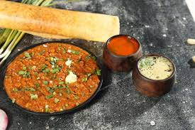
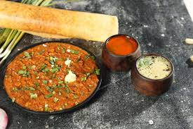

food is very important for our health.We need food to survive and stay fit.There are lots of different types of food.
pizza
My favorite food is pizza. I love the combination of its crispy crust, tangy tomato sauce and gooey melted cheese. Pizza is a versatile food that can be enjoyed for any meal of the day. There is no other food I compare to the taste and smell of a freshly baked pizza. Pizza is easy to eat and share with friends and family. The best thing about pizza is that it's a food that brings people together, whether it's a quick lunch or a late night snack. No matter how much I eat, I never fail to feel hungry when my favorite pizza is in front of me.
dosa
 

My Favorite Indian Food is 'Dosa'. I love dosa and it is my most preferred breakfasts. It is well known that dosa is the defining dish of Indian cuisine. Dosa is known as the pancake of the Indian subcontinent.
A dosa is a thin savory pancake in South Indian cuisine made from a fermented batter of ground black lentils and rice. Dosas are served hot, often with chutney and sambar. Dosa is a signature dish in South India and Sri Lanka, and is popularly served in their respective restaurants around the world.
burger
My favourite food is a burger. It has many layers of fresh vegetables, sauces and a patty filled between two buns. A burger is a fun dish, and everyone at home enjoys eating it. Many restaurants serve delicious burgers, but I love the one my mother makes at home. I love the taste of the fresh, crunchy lettuce leaves, the tangy tomatoes and the cheese that melts in the mouth. Burgers are my favourite 4 pm snack, and my mom always makes it as healthy as she can! I love every bite!